The emblem set
One hundred and four emblems for roles, Dreams, Missions, Exorcism, parcels and side missions, plus the small interface glyphs.

One drawing per emblem on a 100-unit grid. As an icon it stands alone at 24, 44 and 72px. As card art it sits inside a complete ring of rays that clears the emblem and its own box, so a burst is never cropped.
Roles
Innocent
Mimic
Mentalist
Whore
Magistrate
Diplomat
The Lovers
Guardian
Bodyguard
Oracle
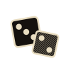
GamblerVigilante
Scapegoat
Death
Traveling Agent
Psycho
Terrorist
Bard
Witch
Double Agent
Necromancer
Conspirator
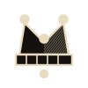
JesterCult Leader
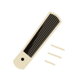
The RipperDreams
Sleep Paralysis
Premonition
Whispers of the Past
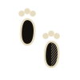
Sleepwalking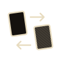
Dream SnatcherNight Shift
Shared Nightmare
Insomnia
Guardian Angel
Missions
Medium
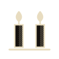
Believer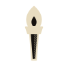
Companion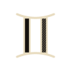
Twins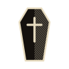
UndertakerReaper
Charlatan
Veiled
Stray
Shade
Regular Mission
Lantern Bearer
Fresh Faces
Extra Hand
Skeleton Crew
Masked Vote
Short Patience
Ward
Steadfast
Brittle
Smoke
Grand Mission
Trail
Witness
Haunted Road
Succeed
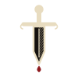
SabotageAye
Nay
Exorcism and objects
The Living
The Demon
Night
Day
Recovery
Coin toss
Parcel
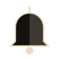
SoundThe Traveling Agent’s parcels
Brass key
Warm sand
Old ticket
Black feather
Backward watch
Sealed letter
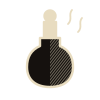
Grey perfume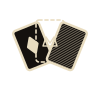
Missing QueenRain candle
Empty room
Velvet box
Compass
Side missions
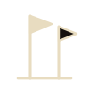
Go twiceGo thrice
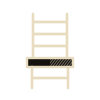
Stay behindEarly bird
Late arrival
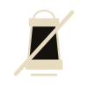
No lanternBad luck
Clean record
Naysayer
Open heart
Lone voice
Lost cause
Contrarian
Crowd
First trust
Popular
Self-starter
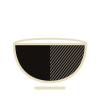
HumbleNeighbours
Steady eye
Restless
Interface glyphs, kept from the current set at a heavier stroke
Menu
Close
Done
Up
Down
More
Fewer
Leave
Cover
Muted
Record
Bot